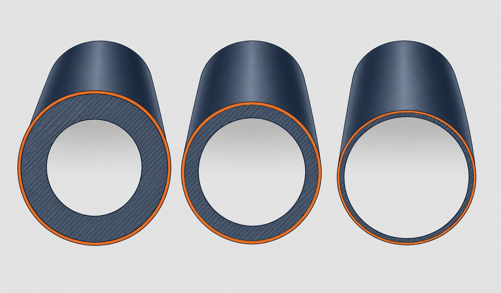

چرا انتخاب گرید اهمیت اقتصادی دارد؟
در خطوط انتقال طولانی، هزینه لوله بخش اصلی بودجه مواد است. گرید بالاتر اجازه دیواره نازکتر میدهد و تناژ را کم میکند؛ اما قیمت هر تن و هزینه جوشکاری را بالا میبرد. انتخاب بهینه گرید، یک معامله مهندسی بین این دو کفه است که باید بر اساس فشار طراحی، کلاس منطقه و قابلیت اجرا انجام شود.

جدول مقایسه سریع
| معیار | ایکس۵۲ | ایکس۶۰ | ایکس۶۵ |
|---|---|---|---|
| حداقل حد تسلیم | حدود ۳۵۸ مگاپاسکال | حدود ۴۱۴ مگاپاسکال | حدود ۴۴۸ مگاپاسکال |
| حداقل استحکام کششی | حدود ۴۵۵ مگاپاسکال | حدود ۵۲۰ مگاپاسکال | حدود ۵۳۰ مگاپاسکال |
| وزن دیواره در فشار یکسان | بیشترین | متوسط | کمترین |
| جوشپذیری میدانی | بسیار خوب | خوب با کنترل پارامتر | حساستر؛ نیازمند کنترل دقیق |
| کاربرد رایج | خطوط با فشار متوسط و پروژههای عمومی | خطوط انتقال اصلی | خطوط پرفشار مدرن و اقتصاد وزن |
ارقام، حداقلهای مشخصه استاندارد هستند؛ مقادیر واقعی هر ذوب در گواهی مواد میآید.
استحکام در برابر اجرا
هر پله ارتقای گرید، استحکام را افزایش اما پنجره جوشکاری را تنگتر میکند. در گریدهای بالاتر، کنترل معادل کربن، محدودیت ورودی گرما و در برخی موارد پیشگرم اهمیت حیاتی پیدا میکند. اگر پیمانکار اجرا تجربه کافی با گریدهای بالا را نداشته باشد، ریسک عیوض جوش میتواند صرفهجویی وزنی را خنثی کند.
معیارهای انتخاب
- فشار طراحی: نقطه شروع محاسبات؛ گرید باید با ضخامت اقتصادی پوشش دهد.
- کلاس منطقه: در مناطق پرجمعیت با ضرایب طراحی بالاتر، گرید بالا میتواند وزن را کنترل کند.
- طول خط و لجستیک: صرفهجویی وزنی در خطوط طولانی معنادارتر است.
- قابلیت اجرای جوشکاری: تجربه پیمانکار و دستورالعملهای موجود.
- در دسترس بودن: زمان تحویل و موجودی بازار هر گرید.
جمعبندی تصمیم
- برای فشارهای متوسط و اولویت سادگی اجرا: ایکس۵۲.
- برای خطوط اصلی با تعادل بین استحکام و اجرا: ایکس۶۰.
- برای خطوط پرفشار مدرن با هدف کمینهسازی وزن: ایکس۶۵.
- در همه حالات، گواهی مواد و تست ضربه متناسب با دمای طراحی را درخواست کنید.
جوشکاری و اجرا در سه گرید
یکی از نکات عملی مهم در مقایسه این سه گرید، تفاوت رفتار آنها در جوشکاری و اجرای خط است که مستقیما بر هزینه و برنامه اجرا اثر میگذارد. هرچه استحکام گرید بالاتر میرود، حساسیت متالورژیکی ناحیه متاثر از جوش بیشتر میشود و کنترل پارامترهای جوشکاری اهمیت بیشتری پیدا میکند. گرید ایکس۵۲ با معادل کربن پایین، جوشپذیری بسیار خوبی دارد و در شرایط عادی معمولا بدون پیشگرم جوشکاری میشود؛ به همین دلیل در خطوط با شرایط میدانی متنوع، اجرای آن کمریسکتر است. در گرید ایکس۶۰ و به ویژه ایکس۶۵، کنترل انرژی ورودی اهمیت بیشتری دارد؛ انرژی ورودی بیش از حد، چقرمگی ناحیه متاثر از جوش را کاهش میدهد و انرژی ناکافی، ریسک ترک سرد را بالا میبرد. به همین دلیل در این گریدها، پیشگرم در دماهای پایین محیطی، کنترل دمای بین پاسی و پایبندی دقیق به دستورالعمل جوشکاری تاییدشده اهمیت بیشتری دارد. از نظر عملی، ارتقای گرید ممکن است نیاز به بازنگری دستورالعملهای جوشکاری موجود پروژه را ایجاد کند؛ دستورالعملی که برای ایکس۵۲ تایید شده، لزوما برای ایکس۶۵ معتبر نیست و باید محدوده پوشش هر دستورالعمل بر اساس کدهای مربوطه کنترل شود. در خطوط با اتصال به تجهیزات و اتصالات فورج، تفاوت استحکام بین لوله و اتصال نیز باید در انتخاب مواد پرکننده لحاظ گردد؛ انتخاب الکترود یا سیم جوش معمولا بر اساس استحکام فلز پایه ضعیفتر انجام میشود اما در ترکیبهای ناهمگن باید تحلیل دقیقتری صورت گیرد. از منظر کنترل کیفیت، الزامات آزمونهای غیرمخرب جوش در هر سه گرید مشابه است اما در سرویسهای ترش، گریدهای بالاتر سختگیری بیشتری روی کنترل سختی ناحیه جوش دارند. در جمعبندی بخش اجرا، هنگام مقایسه اقتصادی گریدها، هزینه تفاوتهای اجرایی شامل پیشگرم، کنترل بیشتر و احتمال بازرسی تکمیلی را نیز در محاسبه لحاظ کنید، نه فقط قیمت خرید لوله را.
جمعبندی
هیچ گریدی ذاتاً بهترین نیست؛ بهترین گرید آن است که فشار طراحی، اقتصاد وزن و قابلیت اجرا را همزمان راضی کند. با ارائه مدارک طراحی، مقایسه دقیق برای پروژه شما قابل ارائه است.
سوالات رایج
چرا با گرید بالاتر وزن خط کم میشود؟
در فشار طراحی یکسان، لوله با استحکام بالاتر میتواند دیواره نازکتری داشته باشد؛ در نتیجه وزن هر متر و تناژ کل خط کاهش مییابد. این صرفهجویی در خطوط طولانی قابل توجه است.
آیا گرید بالاتر همیشه بهتر است؟
خیر. گریدهای بالاتر معادل کربن بالاتر، جوشپذیری حساستر و قیمت هر تن بیشتری دارند. اگر فشار طراحی با گرید پایینتر پوشش داده شود، گرید بالاتر فقط هزینه را بالا میبرد.
مهمترین ریسک ارتقای گرید چیست؟
پیچیدهتر شدن جوشکاری میدانی و کارخانهای: نیاز به کنترل دقیقتر ورودی گرما، پیشگرم و دستورالعملهای صلاحیتدار. بدون رعایت این الزامات، مزیت استحکامی با ریسک عیوض جوش خنثی میشود.
آیا میتوان گریدهای مختلف را در یک خط ترکیب کرد؟
از نظر فنی در نقاط اتصال ممکن است لازم باشد، اما طراحی باید افت استحکام در محل اتصال را لحاظ کند و دستورالعمل جوش اتصال ناهمجنس تهیه شود. بهتر است تا حد ممکن یک خط با یک گرید ساخته شود.
مطالب مرتبط
- راهنمای لوله خط انتقال؛ سطوح مشخصه و گریدها
- لوله خط انتقال گرید ایکس۵۲
- لوله خط انتقال گرید ایکس۶۵
- لوله خط انتقال گرید ایکس۷۰
- راهنمای بازرسی درز جوش لولههای جوشی
با ارائه فشار طراحی، کلاس منطقه و شرایط سرویس، مناسبترین گرید و ضخامت پیشنهاد میشود. استعلام خود را همراه مدارک طراحی ثبت کنید تا مقایسه فنی-مالی گریدها ارائه شود.
مشاهده صفحه محصول ← ثبت RFQ همین محصولتامین این تجهیزات را به پیشرو تجهیز فرتاک بسپارید
شرکت پیشرو تجهیز فرتاک تامینکننده تخصصی تجهیزات صنعتی برای پروژههای نفت، گاز، پتروشیمی، فولاد و نیروگاهی است. برای دریافت پیشنهاد فنی و قیمت، استعلام (RFQ) خود را ثبت کنید تا کارشناسان مهندسی فروش در کوتاهترین زمان پاسخ دهند.
- تامین لوله انتقاللوله خط انتقال در گریدهای مختلف با گواهی مواد
- تامین تجهیزات صنایع نفت و گازپکیج کامل خطوط انتقال مطابق وندورلیست